Many data are hierarchical and we want to acknowledge the nested
structure in our models. Specr can easily estimate such multilevel
models. We again have to write a customized function that we can pass
first to setup() and the specr() will do the
rest.
For this example, we will us the gapminder data set that
is included in the gapminder-package. We quickly recode
some variable to get more interpretable estimates.
# Load packages
library(tidyverse)
library(specr)
library(gapminder)
library(lme4)
library(furrr) # For parallelization!
# Recode some variables
gapminder <- gapminder %>%
mutate(gdpPercap_log = log(gdpPercap),
pop = pop/1000)
# Check data
head(gapminder)
#> # A tibble: 6 × 7
#> country continent year lifeExp pop gdpPercap gdpPercap_log
#> <fct> <fct> <int> <dbl> <dbl> <dbl> <dbl>
#> 1 Afghanistan Asia 1952 28.8 8425. 779. 6.66
#> 2 Afghanistan Asia 1957 30.3 9241. 821. 6.71
#> 3 Afghanistan Asia 1962 32.0 10267. 853. 6.75
#> 4 Afghanistan Asia 1967 34.0 11538. 836. 6.73
#> 5 Afghanistan Asia 1972 36.1 13079. 740. 6.61
#> 6 Afghanistan Asia 1977 38.4 14880. 786. 6.67For this example, we use the package lme4 and more
specifically the function lmer() to estimate the multilevel
model (more complex models such as poisson or negative binomial
multilevel models can likewise be estimated).
Based on the data set, we want to estimate the relationship between
gdpPercap (GDP per capita) and lifeExp (life
expectancy). Both variables are nested within both countries and years.
We can simply add a respective random effect structure via the argument
add_to_formula. This way, this will be automatically
included in the formula of all specifications. Because
broom doesn’t provide a tidy function for
merMod-objects resulting from lme4::lmer(), we
need to add a new extraction function like so
fun1 = new_function. Luckily, we can use the
broom.mixed package, which agian provides a tidy function
for such objects.
specs <- setup(data = gapminder,
y = c("lifeExp"),
x = c("gdpPercap_log"),
model = c("lmer"),
controls = "pop",
fun1 = function(x) broom.mixed::tidy(x, conf.int = TRUE),
add_to_formula = "(1|country) + (1|year)")
# Check formula
summary(specs)
#> Setup for the Specification Curve Analysis
#> -------------------------------------------
#> Class: specr.setup -- version: 1.0.0
#> Number of specifications: 2
#>
#> Specifications:
#>
#> Independent variable: gdpPercap_log
#> Dependent variable: lifeExp
#> Models: lmer
#> Covariates: no covariates, pop
#> Subsets analyses: all
#>
#> Function used to extract parameters:
#>
#> function(x) broom.mixed::tidy(x, conf.int = TRUE)
#>
#>
#> Head of specifications table (first 6 rows):
#> # A tibble: 2 × 6
#> x y model controls subsets formula
#> <chr> <chr> <chr> <chr> <chr> <glue>
#> 1 gdpPercap_log lifeExp lmer no covariates all lifeExp ~ gdpPercap_log + 1…
#> 2 gdpPercap_log lifeExp lmer pop all lifeExp ~ gdpPercap_log + p…
# Run analysis and inspect results
results <- specr(specs)
#> Warning: Some predictor variables are on very different scales: consider
#> rescaling
as_tibble(results)
#> # A tibble: 2 × 22
#> x y model controls subsets formula model_function effect group term
#> <chr> <chr> <chr> <chr> <chr> <glue> <list> <chr> <chr> <chr>
#> 1 gdpPer… life… lmer no cova… all lifeEx… <fn> fixed NA gdpP…
#> 2 gdpPer… life… lmer pop all lifeEx… <fn> fixed NA gdpP…
#> # … with 12 more variables: estimate <dbl>, std.error <dbl>, statistic <dbl>,
#> # conf.low <dbl>, conf.high <dbl>, fit_nobs <int>, fit_sigma <dbl>,
#> # fit_logLik <dbl>, fit_AIC <dbl>, fit_BIC <dbl>, fit_REMLcrit <dbl>,
#> # fit_df.residual <int>Sometimes, we may not want to add one random effect structure to all models and instead explore more specific random structure (and even several different random effect structures). In this case, we create several customized lmer-functions that account for different nesting structures.
# Random intercept model (only country as grouping variable)
lmer_ri_1 <- function(formula, data,...) {
require(lme4)
require(broom.mixed)
formula <- paste(formula, "+ (1|country)")
lmer(formula, data)
}
# Including random slopes (only country as grouping variable)
lmer_rs_1 <- function(formula, data,...) {
require(lme4)
require(broom.mixed)
slopevars <- unlist(strsplit(formula, " ~ "))[2]
formula <- paste0(formula, "+ (1 + ", slopevars, "|country)" )
lmer(formula, data)
}
# Random intercept model (lifeExp is nested in both countries and years)
lmer_ri_2 <- function(formula, data,...) {
require(lme4)
require(broom.mixed)
formula <- paste0(formula, "+ (1|country) + (1|year)")
lmer(formula, data)
}
# Including random slopes (intercept and slopes are nested in both countries and years)
lmer_rs_2 <- function(formula, data,...) {
require(lme4)
require(broom.mixed)
slopevars <- unlist(strsplit(formula, " ~ "))[2]
formula <- paste0(formula, "+ (1 + ", slopevars, "|country) + (", slopevars, "|year)" )
lmer(formula, data)
}We can now use these function to estimate these models. In this example, we investigate the influence of different nesting structures on the fixed effect between GDP per capita and life expectancy.
# Setup specifications with customized functions
specs <- setup(data = gapminder,
y = c("lifeExp"),
x = c("gdpPercap_log"),
model = c("lmer_ri_1", "lmer_ri_2",
"lmer_rs_1", "lmer_rs_2"),
controls = "pop")
# Check specifications
summary(specs)
#> Setup for the Specification Curve Analysis
#> -------------------------------------------
#> Class: specr.setup -- version: 1.0.0
#> Number of specifications: 8
#>
#> Specifications:
#>
#> Independent variable: gdpPercap_log
#> Dependent variable: lifeExp
#> Models: lmer_ri_1, lmer_ri_2, lmer_rs_1, lmer_rs_2
#> Covariates: no covariates, pop
#> Subsets analyses: all
#>
#> Function used to extract parameters:
#>
#> function (x)
#> broom::tidy(x, conf.int = TRUE)
#> <environment: 0x7fd618c393d8>
#>
#>
#> Head of specifications table (first 6 rows):
#> # A tibble: 6 × 6
#> x y model controls subsets formula
#> <chr> <chr> <chr> <chr> <chr> <glue>
#> 1 gdpPercap_log lifeExp lmer_ri_1 no covariates all lifeExp ~ gdpPercap_log…
#> 2 gdpPercap_log lifeExp lmer_ri_1 pop all lifeExp ~ gdpPercap_log…
#> 3 gdpPercap_log lifeExp lmer_ri_2 no covariates all lifeExp ~ gdpPercap_log…
#> 4 gdpPercap_log lifeExp lmer_ri_2 pop all lifeExp ~ gdpPercap_log…
#> 5 gdpPercap_log lifeExp lmer_rs_1 no covariates all lifeExp ~ gdpPercap_log…
#> 6 gdpPercap_log lifeExp lmer_rs_1 pop all lifeExp ~ gdpPercap_log…Now, we can simply fit the models with specr() as we are
used to. Although not really necessary here, I going to use
parallelization to exemplify how we can pass the created function to the
workers using furrr_options. We need to pass both new
functions as a list of “globals” and the packages that are additionally
required.
# Create furrr_options and pass globals
opts <- furrr_options(
globals = list(lmer_ri_1 = lmer_ri_1, lmer_ri_2 = lmer_ri_2,
lmer_rs_1 = lmer_rs_1, lmer_rs_2 = lmer_rs_2),
packages = c("lme4", "broom.mixed")
)
# Specify future plan
plan(multisession, workers = 4)
# Run analysis in parallel and plot results
results <- specr(specs, .options = opts) # pass `furrr_options` here
plot(results)
At the end of our analysis, it makes sense to explicitly close multisession workers by switching the plan back to sequential.
plan(sequential)